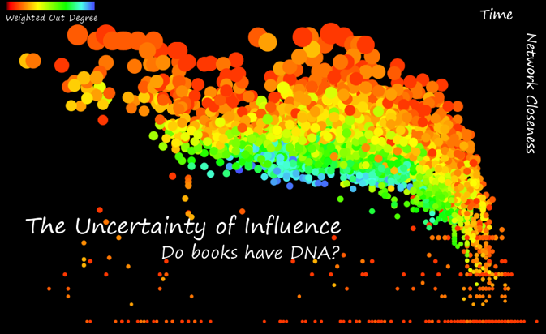

Today, in the Stanford Humanities Center Board Room, as part of the Visualizing Uncertainty workshop that Nicole Coleman has organized, I’ll be presenting on using network analysis and visualization in the analysis of literature.

Matthew Jockers and Elijah Meeks
Monday, December 5, 1:30pm
Stanford Humanities Center, Board Room
About this Session:
Using tools and techniques from natural language processing, text-mining, and social network analysis, we analyze a corpus of 4,300 19th-century novels in order to detect and track stylistic and thematic change over time. Our talk will emphasize the confounding factors that affect our examination: the creation of our corpus, our metric for measuring similarity, and the visual representation of the data as a network.